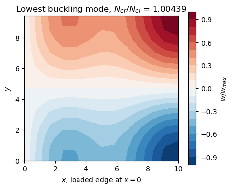
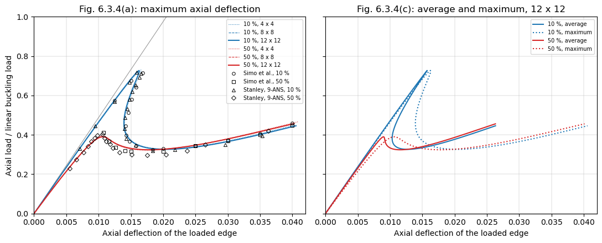
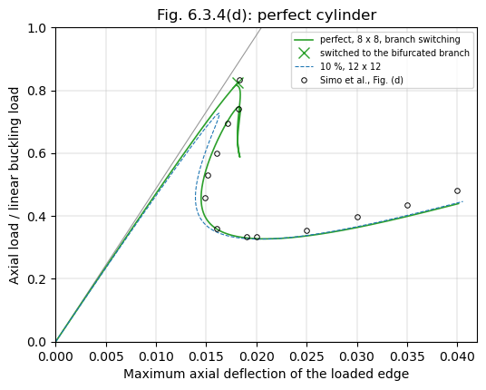

Post-buckling of an axially compressed cylinder with imperfections#
Simo, Fox and Rifai [1], Section 6.3.4 (pp. 54-57, Fig. 6.3.4 on p. 56), traced the post-buckling path of a simply supported cylinder under axial compression, with and without an initial geometric imperfection, with the Riks method and their geometrically exact shell element: radius \(R = 36\), length \(L = 100\), thickness \(t = 0.125\), \(E = 10^7\), \(\nu = 0.3\). As in Stanley [2], they modelled an \(L/10 \times 15°\) section of the cylinder, with symmetry conditions on the interior edges and a simple support on the loaded edge, with a \(10 \times 10\) mesh, such that the post-buckling path is that of the diamond mode of 5 axial half-waves and 12 circumferential waves. The imperfections, of 10 % and 50 % of the thickness, have the shape of the lowest linear buckling mode; the loads are normalized by the linear buckling load and plotted against the axial deflection of the loaded edge, its maximum in Fig. 6.3.4(a) and (d) and also its average in Fig. 6.3.4(c). Fig. 6.3.4(a) also has the results of the 9-node ANS element of Stanley [2].
Here the same section is meshed with the Donnell-type element BFSCCylinder, the imperfection is added exactly as described below, and the path is traced with the Riks method of structsolve (0.10.0 or newer) to an axial deflection of 0.04, the end of the axes of the figure. The model is in the module simo1990_cylinder.py of the folder tests/ of the repository, which also has its test, tests/test_simo1990_cylinder.py: the identities
of the imperfect shell and the limit point of the 10 % imperfection on coarse meshes. Besides bfsccylinder, the notebook requires structsolve 0.10.0 or newer, composites and Matplotlib.
The section#
The section has \(x\) from 0, the loaded edge, to \(a = L/10 = 10\), and \(y\) from 0 to \(b = 15° \, R = 9.425\). With the degrees of freedom \(u\), \(u_{,x}\), \(u_{,y}\), \(v\), \(v_{,x}\), \(v_{,y}\), \(w\), \(w_{,x}\), \(w_{,y}\), \(w_{,xy}\) of the nodes, the edges are:
\(x = 0\), simply supported and loaded: \(v = v_{,y} = w = w_{,y} = 0\), \(u\) free, with the consistent nodal forces of a uniform compressive force per unit length;
\(x = a\), the middle of an axial half-wave of the diamond mode, a symmetry plane: \(u = u_{,y} = v_{,x} = w_{,x} = w_{,xy} = 0\);
\(y = 0\) and \(y = b\), the crest and the trough of a circumferential wave, symmetry planes: \(u_{,y} = v = v_{,x} = w_{,y} = w_{,xy} = 0\).
The derivatives along an edge of a prescribed displacement are prescribed with it. A 15° section is half of a circumferential wave of 12 waves, and \(L/10\) half of an axial half-wave of 5 half-waves. The axial deflection is the axial displacement \(u\) of the loaded edge, the shortening of the section, whose other end does not move axially.
[1]:
import time
import os
import sys
import numpy as np
import matplotlib.pyplot as plt
sys.path.insert(0, os.path.join('..', 'tests'))
import simo1990_cylinder as simo
print('classical buckling load N_cl = E t^2/(R sqrt(3 (1 - nu^2))) = %.1f'
% simo.N_CL)
for n in (4, 6, 8, 12, 16):
model = simo.SectionModel(n, n)
eigvals, modes, ulin = simo.linear_buckling(model)
print('%2d x %2d elements, %4d unknowns: N_cr/N_cl = %s, '
'shortening at N_cl %.5f'
% (n, n, model.bu.sum(), np.array2string(eigvals[:3], precision=5),
model.shortening(ulin)[0]))
classical buckling load N_cl = E t^2/(R sqrt(3 (1 - nu^2))) = 2626.9
4 x 4 elements, 165 unknowns: N_cr/N_cl = [1.011 1.02163 1.02404], shortening at N_cl 0.02086
6 x 6 elements, 367 unknowns: N_cr/N_cl = [1.006 1.01673 1.0196 ], shortening at N_cl 0.02086
8 x 8 elements, 649 unknowns: N_cr/N_cl = [1.00491 1.01574 1.01862], shortening at N_cl 0.02086
12 x 12 elements, 1453 unknowns: N_cr/N_cl = [1.00439 1.01534 1.01808], shortening at N_cl 0.02086
16 x 16 elements, 2577 unknowns: N_cr/N_cl = [1.00427 1.01527 1.01793], shortening at N_cl 0.02086
The lowest buckling load converges to \(1.0043 N_{cl}\), with a pre-buckling state that is not quite the membrane one, the simple support restraining the radial expansion at the loaded edge, and two more modes within 1.5 % above it. Under the linear buckling load the section shortens by \(1.0043 \times 0.020859 = 0.02095\), the abscissa at a load of 1 of the straight lines of Fig. 6.3.4, read as \(0.0205 \pm 0.0003\); the membrane value is \(N_{cl} a/(E t) = 0.02101\). The lowest mode, plotted below, is the diamond mode: one half-wave \(\cos(\pi y/b)\) around the circumference and, along \(x\), the axial half-wave at \(x = a\) with a boundary layer at the simple support.
[2]:
model = simo.SectionModel(12, 12)
eigvals, modes, ulin = simo.linear_buckling(model)
w = modes[6::10, 0].reshape(13, 13)
w /= w.flat[np.argmax(np.abs(w))]
fig, ax = plt.subplots(figsize=(5, 4))
cs = ax.contourf(model.x.reshape(13, 13), model.y.reshape(13, 13), w, 21,
cmap='RdBu_r')
fig.colorbar(cs, label='$w/w_{max}$')
ax.set_xlabel('$x$, loaded edge at $x = 0$')
ax.set_ylabel('$y$')
ax.set_aspect('equal')
ax.set_title('Lowest buckling mode, $N_{cr}/N_{cl}$ = %.5f' % eigvals[0])
plt.show()

Initial imperfection, exactly for the Donnell-type kinematics#
The element takes no initial geometric imperfection, but with the Donnell-type kinematics an imperfection \(w_0\) of the normal displacement can be added exactly. In the strains of a shallow imperfect shell the non-linear terms are \((w_{,x}^2 + 2 w_{0,x} w_{,x})/2\), …, which are those of \(\boldsymbol{u} + \boldsymbol{u}_0\) minus those of \(\boldsymbol{u}_0\), with \(\boldsymbol{u}_0\) the vector of the degrees of freedom of \(w_0\) (\(u = v = 0\), \(w = w_0\) with its derivatives); the linear membrane strains and the curvatures are linear, so that
and the imperfect shell is stress free at \(\boldsymbol{u} = \boldsymbol{0}\). Its stress resultants are those of the perfect shell at \(\boldsymbol{u} + \boldsymbol{u}_0\) minus \(\boldsymbol{N}_0\) and \(\boldsymbol{M}_0\), those of the state \(\boldsymbol{u}_0\), and since \(\boldsymbol{B}_{NL}(\boldsymbol{u} + \boldsymbol{u}_0) = \boldsymbol{B}_{NL}(\boldsymbol{u}) + \boldsymbol{B}_{NL}(\boldsymbol{u}_0)\) and \(\int_A \boldsymbol{B}_{NL}(\boldsymbol{u})^\top \boldsymbol{N}_0 dA = \boldsymbol{K}_G(\boldsymbol{N}_0) \boldsymbol{u}\), the gradient of the strain energy of the imperfect shell is
with \(\boldsymbol{K}_T = \boldsymbol{K}_{C0} + \boldsymbol{K}_{CNL} + \boldsymbol{K}_{GNL} + \boldsymbol{K}_G\) and \(\boldsymbol{K}_G(\boldsymbol{N}_0)\) the geometric stiffness matrix of the resultants \(\boldsymbol{N}_0\) of the whole strains of \(\boldsymbol{u}_0\), linear and non-linear. The identities hold for the quadrature sums of the elements, for any number of integration points, when \(\boldsymbol{K}_G(\boldsymbol{N}_0)\) is integrated with the same points.
update_KG builds its matrix from the resultants of the linear strains only, \(\boldsymbol{K}_G(\boldsymbol{u}_0)\), which is linear in the displacements, see its Notes; the part of the non-linear strains, \(\boldsymbol{K}_{GNL,0}\), is computed by SectionModel.calc_kG_N from the resultants at the integration points, such that \(\boldsymbol{K}_G(\boldsymbol{N}_0) = \boldsymbol{K}_G(\boldsymbol{u}_0) +
\boldsymbol{K}_{GNL,0}\). The callables of structsolve, in ImperfectCylinder, are then
calc_fint: \(\boldsymbol{F}_{int}(\boldsymbol{u} + \boldsymbol{u}_0) - \boldsymbol{F}_{int}(\boldsymbol{u}_0) - \boldsymbol{K}_G(\boldsymbol{u}_0) \boldsymbol{u} - \boldsymbol{K}_{GNL,0} \boldsymbol{u}\);calc_kC: \(\boldsymbol{K}_{C0} + \boldsymbol{K}_{CNL}(\boldsymbol{u} + \boldsymbol{u}_0) + \boldsymbol{K}_{GNL}(\boldsymbol{u} + \boldsymbol{u}_0) - \boldsymbol{K}_{GNL,0}\), the matrix ofupdate_KCNLminus \(\boldsymbol{K}_{GNL,0}\);calc_kG: \(\boldsymbol{K}_G(\boldsymbol{u} + \boldsymbol{u}_0) - \boldsymbol{K}_G(\boldsymbol{u}_0) = \boldsymbol{K}_G(\boldsymbol{u})\), the geometric stiffness matrix of the perfect shell.
The construction uses the Donnell-type element: calc_kG_N builds the geometric stiffness matrix with the rows of \(w_{,x}\) and \(w_{,y}\) of the Donnell-type kinematics. With the Sanders-type element the rotation is \(-w_{,y} + v/R\), its geometric stiffness matrix has rows in \(v\), and these identities, not verified here, would need that matrix for \(\boldsymbol{N}_0\).
The checks below, on a \(4 \times 4\) mesh: the internal forces vanish at \(\boldsymbol{u} = \boldsymbol{0}\); calc_kG_N with the resultants of the linear strains gives the matrix of update_KG; the tangent stiffness matrix is the Jacobian of the internal forces, by central differences; and the internal forces are the gradient of the strain energy of the strains \(\boldsymbol{\varepsilon}(\boldsymbol{u} + \boldsymbol{u}_0) -
\boldsymbol{\varepsilon}(\boldsymbol{u}_0)\), computed by SectionModel.strain_energy from the interpolation of the element at the integration points, independently of its kernels. The same gradient with \(\boldsymbol{K}_G(\boldsymbol{u}_0)\) alone in place of \(\boldsymbol{K}_G(\boldsymbol{N}_0)\) is off by orders of magnitude more than the error of the central differences, which decreases with \(h^2\).
[3]:
rng = np.random.default_rng(1)
model, mode, lbd_cr = simo.normalized_model(4, 4)
n = model.bu.sum()
u = model.expand(rng.standard_normal(n)*1e-2)
KG = model.calc_KG(u).toarray()
KGN = model.calc_kG_N(model.membrane_resultants(u, nonlinear=False)).toarray()
print('calc_kG_N(N_L(u)) vs. update_KG(u): rel. diff %.1e'
% (np.abs(KGN - KG).max()/np.abs(KG).max()))
for xi in (0.1, 0.5):
u0 = simo.imperfection(model, mode, xi)
imp = simo.ImperfectCylinder(model, u0)
print('imperfection %g t: |F_int,imp(0)| = %.1e' %
(xi, np.linalg.norm(imp.calc_fint(np.zeros(n)))))
u = np.zeros(model.N)
u[6::10] = rng.standard_normal(model.N//10)
u *= 0.3*simo.t/np.abs(u).max()
u[0::10] = 1e-3*rng.standard_normal(model.N//10)
u[3::10] = 1e-3*rng.standard_normal(model.N//10)
c = u[model.bu]
U = model.expand(c)
v = rng.standard_normal(n)
KT = imp.calc_kC(c, NLgeom=True) + imp.calc_kG(c, NLgeom=True)
fv = imp.calc_fint(c) @ v
fv_L = (model.calc_fint(U + u0) - imp.fint0 - imp.KG0 @ U)[model.bu] @ v
for h in (1e-4, 1e-5):
dfd = (imp.calc_fint(c + h*v) - imp.calc_fint(c - h*v))/(2*h)
dU = (model.strain_energy(model.expand(c + h*v), u0)
- model.strain_energy(model.expand(c - h*v), u0))/(2*h)
print(' h = %.0e: tangent %.1e, energy gradient %.1e, '
'with K_G(u0) alone %.1e'
% (h, np.linalg.norm(dfd - KT @ v)/np.linalg.norm(KT @ v),
abs(dU - fv)/abs(fv), abs(dU - fv_L)/abs(fv)))
calc_kG_N(N_L(u)) vs. update_KG(u): rel. diff 5.2e-16
imperfection 0.1 t: |F_int,imp(0)| = 0.0e+00
h = 1e-04: tangent 8.0e-09, energy gradient 2.8e-06, with K_G(u0) alone 3.3e-05
h = 1e-05: tangent 8.0e-11, energy gradient 2.8e-08, with K_G(u0) alone 3.6e-05
imperfection 0.5 t: |F_int,imp(0)| = 0.0e+00
h = 1e-04: tangent 1.2e-08, energy gradient 4.0e-06, with K_G(u0) alone 1.5e-04
h = 1e-05: tangent 1.2e-10, energy gradient 4.0e-08, with K_G(u0) alone 1.4e-04
Riks analyses with the imperfections#
The imperfection is the \(w\) part of the lowest buckling mode, scaled to a largest \(|w_0|\) of 10 % or 50 % of \(t\). Its sign does not matter: the section is symmetric about \(y = b/2\), and \(-\cos(\pi y/b) = \cos(\pi (b -
y)/b)\). The reference load of each mesh is its own linear buckling load, such that the load factor of structsolve is the normalized load of the figure. The Riks method of structsolve starts with an increment of 0.1 of the load factor, limited to 0.1, and stops at the first converged increment with a maximum axial deflection of 0.04, with stop_criterion = value_reached(...) (run_riks of the module). Three meshes, the finest one, \(12 \times 12\), being the one of the figures:
[4]:
runs = {}
for xi in (0.1, 0.5):
for n in (4, 8, 12):
r = simo.run_riks(xi, n, n)
runs[xi, n] = r
an = r['an']
fext = an.calc_fext()
res = max(np.linalg.norm(an.calc_fint(c) - lbd*fext)
for lbd, c in zip(an.increments, an.cs))/np.linalg.norm(fext)
lbd_lim, u_lim = simo.limit_point(r['lbds'], r['umax'])
print('%2d %% %2d x %2d: N_cr/N_cl %.5f, %3d increments, %5.1f s, '
'max. residual %.0e, limit load %.4f at u_max %.5f'
% (100*xi, n, n, r['lbd_cr'], len(an.increments), r['elapsed'],
res, lbd_lim, u_lim))
10 % 4 x 4: N_cr/N_cl 1.01100, 102 increments, 9.9 s, max. residual 8e-11, limit load 0.7294 at u_max 0.01657
10 % 8 x 8: N_cr/N_cl 1.00491, 101 increments, 38.9 s, max. residual 1e-10, limit load 0.7270 at u_max 0.01625
10 % 12 x 12: N_cr/N_cl 1.00439, 100 increments, 89.1 s, max. residual 1e-10, limit load 0.7269 at u_max 0.01625
50 % 4 x 4: N_cr/N_cl 1.01100, 65 increments, 6.6 s, max. residual 2e-10, limit load 0.3965 at u_max 0.01064
50 % 8 x 8: N_cr/N_cl 1.00491, 64 increments, 26.0 s, max. residual 2e-10, limit load 0.3905 at u_max 0.01070
50 % 12 x 12: N_cr/N_cl 1.00439, 64 increments, 44.7 s, max. residual 2e-10, limit load 0.3902 at u_max 0.01070
The limit loads change by less than 0.001 from the \(8 \times 8\) to the \(12 \times 12\) mesh; a \(16 \times 16\) mesh, not run here (77 s and 52 s), gives 0.7270 and 0.3902, at the same deflections within \(10^{-5}\). The residual of every converged increment is below \(10^{-9}\) of the reference load vector.
[5]:
def plot_fig(ax, data, marker, label):
d = np.array(data)
ax.plot(d[:, 0], d[:, 1], marker, ms=4, mfc='none', color='k', mew=0.7,
label=label)
fig, axes = plt.subplots(1, 2, figsize=(11, 4.5), sharey=True)
colors = {0.1: 'C0', 0.5: 'C3'}
ax = axes[0]
ax.plot([0, 0.04], [0, 0.04/simo.FIG_LINEAR_U1], color='0.6', lw=0.8)
for xi in (0.1, 0.5):
for n, ls, lw in ((4, ':', 0.8), (8, '--', 0.8), (12, '-', 1.5)):
r = runs[xi, n]
ax.plot(r['umax'], r['lbds'], ls=ls, lw=lw, color=colors[xi],
label='%d %%, %d x %d' % (100*xi, n, n))
plot_fig(ax, simo.FIG_A_SIMO_10, 'o', 'Simo et al., 10 %')
plot_fig(ax, simo.FIG_A_SIMO_50, 's', 'Simo et al., 50 %')
plot_fig(ax, simo.FIG_A_ANS_10, '^', 'Stanley, 9-ANS, 10 %')
plot_fig(ax, simo.FIG_A_ANS_50, 'D', 'Stanley, 9-ANS, 50 %')
ax.set_title('Fig. 6.3.4(a): maximum axial deflection')
ax.set_ylabel('Axial load / linear buckling load')
ax = axes[1]
for xi in (0.1, 0.5):
r = runs[xi, 12]
ax.plot(r['uavg'], r['lbds'], '-', color=colors[xi],
label='%d %%, average' % (100*xi))
ax.plot(r['umax'], r['lbds'], ':', color=colors[xi],
label='%d %%, maximum' % (100*xi))
ax.set_title('Fig. 6.3.4(c): average and maximum, 12 x 12')
for ax in axes:
ax.set_xlim(0, 0.042)
ax.set_ylim(0, 1)
ax.set_xlabel('Axial deflection of the loaded edge')
ax.grid(lw=0.3)
ax.legend(fontsize=7, loc='upper right')
fig.tight_layout()
plt.show()

The values of Simo et al. and of Stanley are read from Fig. 6.3.4 on the page rendered at 300 dpi with a grid of \(0.001 \times 0.05\) drawn over the axes, to about \(\pm 0.0003\) in the deflection and \(\pm 0.01\) in the load. The table compares the limit loads, the minimum loads after them and the loads at a maximum deflection of 0.04, of the \(12 \times 12\) mesh:
[6]:
def summary(r):
lbds, u = r['lbds'], r['umax']
ilim = np.flatnonzero(np.diff(lbds) < 0)[0]
imin = ilim + np.argmin(lbds[ilim:])
p04 = np.interp(0.04, u[-2:], lbds[-2:])
return lbds[ilim], u[ilim], lbds[imin], u[imin], p04
def fig_summary(data):
d = np.array(data)
ilim = np.flatnonzero(np.diff(d[:, 1]) < 0)[0]
imin = ilim + np.argmin(d[ilim:, 1])
p04 = d[-1, 1] if abs(d[-1, 0] - 0.04) < 1e-4 else np.nan
return d[ilim, 1], d[ilim, 0], d[imin, 1], d[imin, 0], p04
print('%-26s %7s %8s %7s %8s %7s' % ('', 'P_lim', 'u_lim', 'P_min', 'u_min',
'P(0.04)'))
for xi, fsimo, fans in ((0.1, simo.FIG_A_SIMO_10, simo.FIG_A_ANS_10),
(0.5, simo.FIG_A_SIMO_50, simo.FIG_A_ANS_50)):
for label, s in (('BFSC 12 x 12, %d %%' % (100*xi), summary(runs[xi, 12])),
('Simo et al., Fig. (a)', fig_summary(fsimo)),
('Stanley 9-ANS, Fig. (a)', fig_summary(fans))):
print('%-26s %7.3f %8.4f %7.3f %8.4f %7.3f' % ((label,) + s))
P_lim u_lim P_min u_min P(0.04)
BFSC 12 x 12, 10 % 0.727 0.0163 0.326 0.0203 0.441
Simo et al., Fig. (a) 0.715 0.0168 0.326 0.0184 0.459
Stanley 9-ANS, Fig. (a) 0.717 0.0159 0.319 0.0184 nan
BFSC 12 x 12, 50 % 0.390 0.0107 0.324 0.0179 0.455
Simo et al., Fig. (a) 0.411 0.0108 0.315 0.0150 0.449
Stanley 9-ANS, Fig. (a) 0.402 0.0106 0.297 0.0175 nan
The limit loads are 0.727 and 0.390, against 0.715 and 0.411 of Simo et al. and 0.717 and 0.402 of Stanley’s 9-ANS element, at deflections within 0.0006 of theirs. The differences, 0.012 and 0.021, are larger than the reading precision, and of the size of the differences between the two elements of the figure; the Donnell-type kinematics of this model and the geometrically exact shell of [1] differ in the terms of the order of the waves over the radius, and their \(10 \times 10\) mesh of a low-order element is coarser than the converged meshes here. The post-buckling path is that of the figure: the load drops at a decreasing, then increasing, deflection to a minimum of 0.326 (10 %) and 0.324 (50 %), against 0.326 and 0.315 of Simo et al., and both curves rise again to 0.44-0.46 at a deflection of 0.04 (0.459 and 0.449 in the figure). The average deflection, Fig. 6.3.4(c), is smaller than the maximum one beyond the limit point, the section shortening most at the inward lobe of the mode.
The Riks analyses of a Ritz model of the same section with panels, in the benchmark benchmarks/simo1990_cylinder.py of structsolve, give 1.00415 \(N_{cl}\) for the buckling load, and limit loads of 0.727 at 0.0163 and 0.390 at 0.0107, the same as here to the digits given.
The perfect cylinder, branch switching#
Without imperfection the path is axisymmetric until a bifurcation. Fig. 6.3.4(d) traces it with a branch switching technique; [1] notes the difficulties of a multiplicity of clustered critical points near the first bifurcation, the solution process often changing paths. Here the Riks method of structsolve runs with inertia=True and SuperLU, whose sign of the determinant of the tangent stiffness matrix locates the critical points crossed, and with branch_switching=3, which switches to the
bifurcated branch, along the critical eigenvector, at most three times. Increments of at most 0.03 avoid stepping over the clustered critical points. The \(8 \times 8\) mesh:
[7]:
r0 = simo.run_riks(0., 8, 8, branch_switching=3)
an0 = r0['an']
bp = np.array(an0.branch_points)
print('%d increments, %.0f s, switched at the increments %s, of load '
'factor %s, maximum deflection %s'
% (len(an0.increments), r0['elapsed'], bp,
np.array2string(r0['lbds'][bp + 1], precision=4),
np.array2string(r0['umax'][bp + 1], precision=5)))
signs = np.array(an0.det_signs)
print('sign of the determinant: +1 up to the increment %d, then %s'
% (np.argmax(signs < 0) - 1, np.unique(signs[np.argmax(signs < 0):])))
lbds0, u0max = r0['lbds'], r0['umax']
ilim = bp[0] + 1
imin = ilim + np.argmin(lbds0[ilim:])
print('bifurcation %.4f at %.5f; minimum %.4f at %.5f; %.4f at 0.04'
% (lbds0[ilim], u0max[ilim], lbds0[imin], u0max[imin],
np.interp(0.04, u0max[-2:], lbds0[-2:])))
461 increments, 125 s, switched at the increments [33], of load factor [0.8241], maximum deflection [0.01815]
sign of the determinant: +1 up to the increment 32, then [-1 1]
bifurcation 0.8241 at 0.01815; minimum 0.3272 at 0.02091; 0.4384 at 0.04
[8]:
fig, ax = plt.subplots(figsize=(6, 4.5))
ax.plot([0, 0.04], [0, 0.04/simo.FIG_LINEAR_U1], color='0.6', lw=0.8)
ax.plot(u0max, lbds0, '-', color='C2', lw=1.2,
label='perfect, 8 x 8, branch switching')
ax.plot(u0max[bp + 1], lbds0[bp + 1], 'x', color='C2', ms=8,
label='switched to the bifurcated branch')
ax.plot(runs[0.1, 12]['umax'], runs[0.1, 12]['lbds'], '--', color='C0',
lw=0.8, label='10 %, 12 x 12')
plot_fig(ax, simo.FIG_D_SIMO, 'o', 'Simo et al., Fig. (d)')
ax.set_xlim(0, 0.042)
ax.set_ylim(0, 1)
ax.set_xlabel('Maximum axial deflection of the loaded edge')
ax.set_ylabel('Axial load / linear buckling load')
ax.set_title('Fig. 6.3.4(d): perfect cylinder')
ax.grid(lw=0.3)
ax.legend(fontsize=7, loc='upper right')
plt.show()

The sign of the determinant changes on the axisymmetric path between the increments 32 and 33, where the analysis switches to the bifurcated branch, at a load of 0.824 and a maximum deflection of 0.0181, against 0.833 and 0.0183 read from Fig. 6.3.4(d); the bifurcation is below the linear buckling load because of the non-linear axisymmetric pre-buckling state at the simple support. On the bifurcated branch the load first falls at an almost constant maximum deflection, 0.0179 to 0.0184, as in the figure, down to a limit point at 0.587, rises to another one at 0.748 and then falls with a decreasing maximum deflection, 0.0145 at a load of 0.45 (0.0149 at 0.457 in the figure), to the minimum, 0.327 at 0.0209 (0.334 at 0.020), and ends on the curve of the 10 % imperfection, 0.438 at 0.04 (0.480 in the figure). The sign of the determinant changes at each of these three limit points of the branch, such that the analysis crosses no other bifurcation than the first, and it needed one switch only of the three allowed, in about 460 increments. Between the bifurcation and the descent the figure has a drop to about 0.74 followed by a dotted excursion to a deflection of about 0.0195, of a path that, according to [1], changes branches near clustered critical points; this part of the path differs from the loop computed here, and only the bifurcation load, the descent, the minimum and the end of the curves are compared.
References#
[1] Simo, J. C., Fox, D. D., and Rifai, M. S., On a stress resultant geometrically exact shell model. Part III: Computational aspects of the nonlinear theory, Computer Methods in Applied Mechanics and Engineering, 79(1), 21-70, 1990, doi:10.1016/0045-7825(90)90094-3.
[2] Stanley, G. M., Continuum-based shell elements, PhD thesis, Stanford University, 1985.